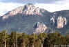
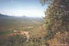
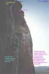

| Harvey's Range Climbing Guide |
By Lee Skidmore, January 2000
Last
updated
July 2006
|
|

|
WHERE
IS THIS PLACE?
Well, the areas are all just out of Townsville. Hmm, basically head out past the Willows shopping complex and continue along there for a half hour or so. Definitely take the relevant topo map.
WHAT'S ON OFFER?
Rock
and lots of it. The most developed area is the Harvey's Marbles bouldering
area. As for the other areas, I can't tell you much about specifics
- this guide is purely intended to whet your appetite. The access
is pretty bad (long treks) for most areas, and I bet a lot of it is
virtually unexplored. There would be hundreds of superb epic trad
routes just waiting to be done. There has been a little development
around Harvey's Range, but I only have info about a few routes.
Round Mountain
- 375m above sea level
- On Townsville's 1:100000 map #8259, it's closest to the co-ords 68,48.
- Take Thuringowa Drive past Kelso and past the dam on the left. Follow the dam retaining wall and it pretty much leads right out there.
- There is some good rock here, but it unfortunately appears as though the whole mountain is owned by a bitter old bastard who doesn't want anyone out there.
Mt Margret
- 264m above sea level
- On Townsville's 1:100000 map #8259, it's closest to the co-ords 58,60.
- There is no climbing here, the mountain is like a big scoria cone with no decent rock.
- I believe the mountain itself may be private property.
- Drive past Willows and continue driving west on that road past the dump on the left and Rangewood Drv on the right. Take Granitevale Rd on the left, before Rupertswood and drive for 3km.
Wild Horse Mountain
- On Townsville's 1:100000 map #8259, it's closest to the co-ords 58,51.
- Drive out Harvey's Range Road past the dump. Take Granitevale Rd on the left, before Rupertswood and drive for 3km until you come to Mt Margret. Another 13km will get you to the back of Wild Horse Mountain (on the left side of the road).
|
Fredrick
Peak
"Please mention on your website that we want to largely retain the wilderness character of climbing at Fredericks Peak. Bolting is ok, provided its been well thought out and all the negative impact issues considered." -- Mark Gommers, 2003
- 679m above sea level
- On Townsville's 1:100000 map #8259, it's closest to the co-ords
61,56.
- Drive out Harvey's Range Road past the dump. Take Granitevale
Rd on the left, before Rupertswood and drive until you hit power
lines. Follow these left along a washed out 4WD track for 3km
until you reach a fence. Turn right and drive south to the vicinity
of two rock pinnacles (joined by a saddle) which lie NW of the
main peak.
Access:
Local climbers have sorted out the access. 4WD only, then a 60 minute walk up. There is even a little guidebook detailing the existing climbs (15-20). You may be able to contact locals and arrange a visit by using the link to theCrag.com below.
|
 |
|
Above: Fredrick
Peak
|
The Soldier King 30m 15
The route is on the rear pinnacle of the two satellite pinnacles
situated in front of the main Frederick Peak (called South Sentinel).
The two satellite pinnacles lie in a Nth-Sth orientation. In helicopter
recon, it appears that South Sentinel has the most potential.
Corner,
then grey wall on south pinnacle starting from saddle. Abseil descent
(bring a sling).
Mark Gommers 4/94.
A
couple of hundred metres R on South Sentinel. Absent friends 155m 16 Starts on the NW face of
the South Sentinel at Fredericks peak.
1) 48m (16) Up the ramp and face to step L above a scoop. Up to the
orange rock, step L then blast straight up the steep face to reach a
ledge and DBB.
2) 25m (12) Climb the V corner with some loose looking blocks on the
L then swing R across the steep wall to a stance on the detached rib.
Follow the spectacular rib all the way to a ledge.
3) 22m (10) Step L then up the face to reach a large ledge and tree.
4) 30m (10) Climb the steep corner on the L to reach a large sloping
ledge and cave underneath the summit bluff. Traverse 9m R to reach belay
at a corner.
5) 30m (11) Steeply up the corner system to reach the summit.
Mark Gommers, Nathan Walmsley (alt leads) 16/02/2003. 1st pitch FFA
Mark Gommers 02/02/2003
Much more has been happening here in recent years (2004-2006). See the theCrag.com route database.
The Outcrop
- On Rollingstone's 1:100000 map #8159, it's closest to the co-ords 46,58.
- This place is easy to find, because it's the best looking rock, closest to the
road on the drive out there. Drive out on Harvey Range Rd and just keep going past the turn offs for the above areas. Continue west of Townsville until the road starts to
elevate. When the road starts to elevate, you're getting close. Simply keep driving for about 1-2km on the slight incline until you see the large rocky outcrop on the left. That's your goal. If the road begins a large sweeping turn, you've gone too far.
2-3 pitch grade 22/23
Park the car on the right hand side (looking uphill) of the road at the obvious spot and then walk back down the hill on the right hand side (looking downhill). Stop when you come across an
orangey-brown bedrock washout. Step over the guide-rail and go down there, if it's the right one, there'll be pipes you could walk through taking you under the highway.
Anyway, start your uphill trek from this washout/creek thingy. Follow it up towards to outcrop. About 15 people (as at Sept '97) have made the walk up there so there is a bit of a track. Also, you may see bits of white tape around some of the trees to guide you.
As to the route, it is all natural and was apparently established in the mid
90's by Scott Johnson of Mt Stuart fame. It was attempted in 1997 by Nathan Bolton and Brad Mann and the
very crappy pictures below might give you some idea.
 |
 |
 |
| Above:
A view of the area from the wrong side |
Above:
Looking back from the area towards Townsville |
Above:
A topo photo of the main wall. |
Harvey's
Marbles
- This is the most
developed area, with hundreds of boulder problems.
- As for access, keep
driving past The Outcrop (mentioned above) until
reaching a left turn (dirt) which is marked as a firing range. Take this, and
follow the road for several kilometres until you reach a locked gate. Park the
car so as not to obstruct the gate, then walk left off the road to encounter the
first set of boulders.
- For more detailed
information, see the Harvey's Marbles Bouldering
Guide.

|

{kind=link}
{kind=link}
{kind=link}